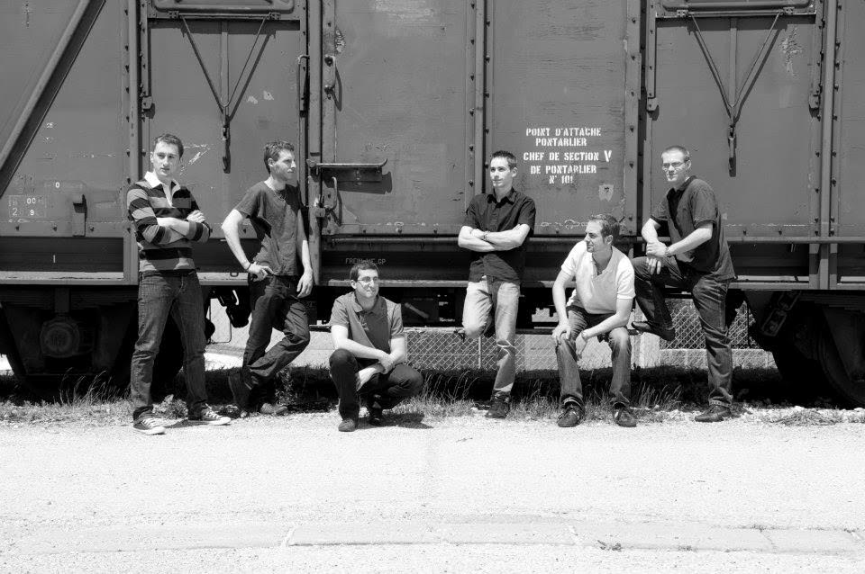

Vers 11h30 : Apéritif offert à toute la population et aux participants au moment de la cérémonie de remise des prix.
Vers 12h00 : Possibilité de restauration sur place sous chapiteau. Prix du repas: 12€ avec au menu salade composé, jambon au barbecue sauce à l'échalotte et purée, fromage, tarte à l'abricot et café offert.
Vers 15h00: Festival Rock GRATUIT, sur le stade, avec en première partie Rock In Peace, et à partir de 17h Let Dzur sur la grande scène
En soirée, Julien Locatelli et son groupe KASH
Toute la journée, frites, sandwichs, et à partir de 18h00, tartes flambées.